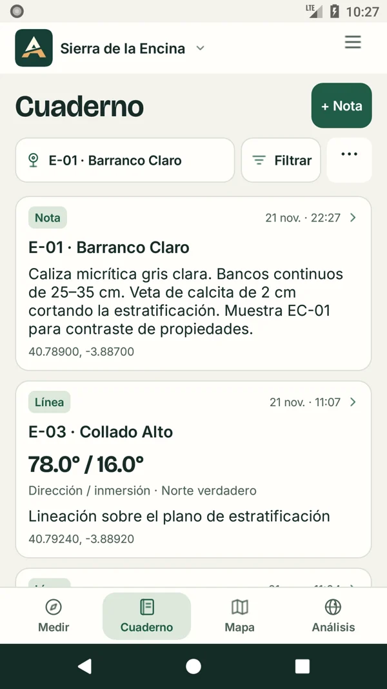
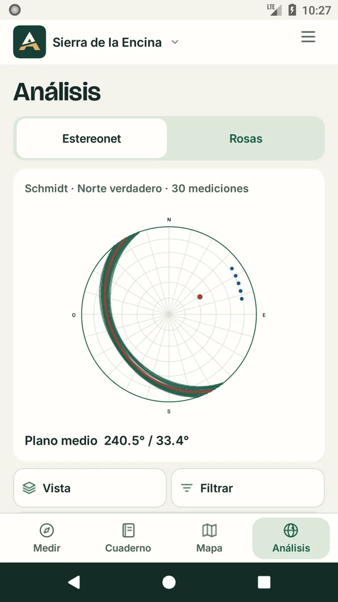

Mediciones, notas y fotos
Clasifica y filtra los registros, corrige una observación o recupérala de la Papelera.
Geología de campo · Android
Mide planos y líneas. Guarda cada lectura con sus notas, fotos y estación. Vuelve del campo con los datos en su sitio.
Empieza gratis · Android 8 o posterior · Pro opcional mediante compra única. Disponible en Google Play España.

Del afloramiento al análisis
Organiza el trabajo por proyectos y estaciones. El cuaderno funciona en el dispositivo, sin una cuenta de Aflorario.

Clasifica y filtra los registros, corrige una observación o recupérala de la Papelera.

Usa las bases en línea directamente. Importa tus propios MBTiles gratis o descarga mapas IGN con Pro.

Consulta estereonets y exporta datos en CSV, GeoJSON, KML o KMZ. Guarda una copia del proyecto con sus adjuntos.
Todas las capturas muestran la app real con un proyecto ficticio. Mapas y atribuciones de sus proveedores.
Pro amplía las herramientas de campo. La descarga de la app y el trabajo del cuaderno son gratuitos.
Consulta el precio localizado y actualizado en Google Play antes de comprar. Los candidatos minerales son hipótesis que debes contrastar.
Antes de salir
Resuelve una duda concreta y prueba un recorrido real de la app.
Mediciones
La convención angular, el apoyo del teléfono y el norte que debes anotar.
Leer la guía de medición →Mapas
Qué descargar, cómo comprobar el mapa y qué puedes importar gratis.
Preparar los mapas →Recurso gratuito
Una hoja imprimible y una plantilla CSV para organizar las observaciones.
Abrir la plantilla →El cuaderno y los mapas locales funcionan sin cobertura. Las bases en línea necesitan internet. Con Pro puedes descargar mapas IGN por zonas de España; gratis puedes importar tus propios MBTiles. Comprueba el mapa y sus niveles de zoom antes de salir.
No para consultar las bases en línea: callejero, relieve y satélite están disponibles desde la app. Las descargas o la importación solo son necesarias cuando quieres disponer de mapas locales sin conexión.
Las lecturas dependen de los sensores, su calibración y las interferencias. Comprueba rumbo e inclinación con referencias conocidas antes de medir. También puedes introducir ángulos manualmente.
Sí. La importación de mapas ráster MBTiles y el uso de los mapas ya guardados son gratuitos. Pro añade la descarga integrada de paquetes IGN.
En el dispositivo. No necesitas una cuenta de Aflorario. Exporta una copia con los adjuntos antes de cambiar de móvil o borrar su almacenamiento.
Instala Aflorario y prueba una medición manual, una nota y una fotografía antes de tu próxima salida.
Instalar desde Google PlayLa compra de Pro es opcional. Las bases en línea requieren conexión.